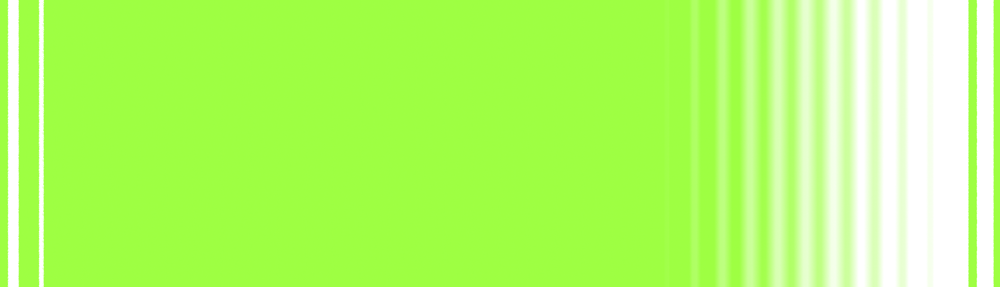

Grounding
다섯 가지 감각으로 경험하는 그라운딩
호흡, 진동, 온도, 압력, 저주파. CTRL KEY가 제안하는 감각 기반 그라운딩을
시각적 인터랙션으로 경험해보세요.
팀장님이 갑자기 이름을 불렀을 때 갑자기 숨이 가빠졌다면
원을 따라 숨을 쉬어보세요
grounding 01
호흡하기
호흡은 긴장의 순간 가장 먼저 달라지는 신체 신호입니다.
갑작스러운 호출이나 압박감이 드는 순간, 호흡은 얕고 짧아집니다.
CTRL KEY는 시각적 리듬을 통해 호흡의 흐름을 인식하고, 현재의 감각으로 돌아오도록 돕습니다.
Sense 호흡 Mode Breath Reset Pattern 들숨 / 유지 / 날숨 Effect 호흡 안정 · 긴장 완화 · 현재 인식
팀메신저 알림이 울릴 때마다 심장이 철렁했다면
진동의 리듬에 집중해보세요
grounding 02
진동하기
진동은 몸에 직접 전달되는 촉각 신호입니다
갑작스러운 자극과 긴장의 순간, 주의는 외부 상황에 쉽게 머무릅니다
CTRL KEY는 일정한 진동 리듬을 통해 몸의 감각을 인식하고, 현재로 주의를 전환하도록 돕습니다.
Sense 진동 Mode Rhythm Reset Pattern 반복 / 리듬 / 촉각 Effect 긴장 완화 · 신체 감각 인식
상사의 말 한마디가 계속 머릿속에 남아있다면
차갑고 따뜻한 감각에 집중해보세요
grounding 03
온도를 느끼기
온도 변화는 흐려진 감각을 즉각적으로 깨우는 신체 신호입니다.
긴장이 남아 있거나 생각이 반복되는 순간, 차갑고 따뜻한 접촉은 주의를 현재의 몸으로 되돌립니다.
CTRL KEY는 미세한 냉감과 온감 변화를 통해 감각을 환기하고, 지금 느껴지는 상태에 집중하도록 돕습니다.
Sense 온도 Mode Thermal Reset Pattern 냉감 / 중립 / 온감 Effect 감각 환기 · 긴장 완화 · 현재 인식
회의실 문 앞에서 심장이 빨라지고 손이 차가워졌다면
손끝의 압력에 집중해보세요
grounding 04
압력을 체험하기
압력은 몸에 직접 전달되는 안정적인 감각 신호입니다.
긴장이 높아지는 순간, 주의는 외부 상황에 머물고 몸은 쉽게 굳어집니다.
CTRL KEY는 일정한 압력의 변화를 통해 몸의 감각을 인식하고, 현재의 상태로 돌아오도록 돕습니다.
Sense 압력 Mode Pressure Reset Pattern 누름 / 유지 / 이완 Effect 주의 전환 · 긴장 완화 · 현재 인식
회의가 끝난 뒤에도 어깨와 턱에 힘이 풀리지 않는다면
저주파의 리듬에 집중해보세요
grounding 05
저주파
저주파는 낮고 일정한 리듬으로 전달되는 감각 신호입니다.
긴장이 지속되는 순간, 몸은 쉽게 굳고 불편한 감각이 남을 수 있습니다.
CTRL KEY는 부드러운 저주파 흐름을 통해 신체의 변화를 인식하고, 현재의 감각으로 돌아오도록 돕습니다.
Sense 저주파 Mode Frequency Reset Pattern 파동 / 반복 / 흐름 Effect 긴장 이완 · 신체 감각 인식